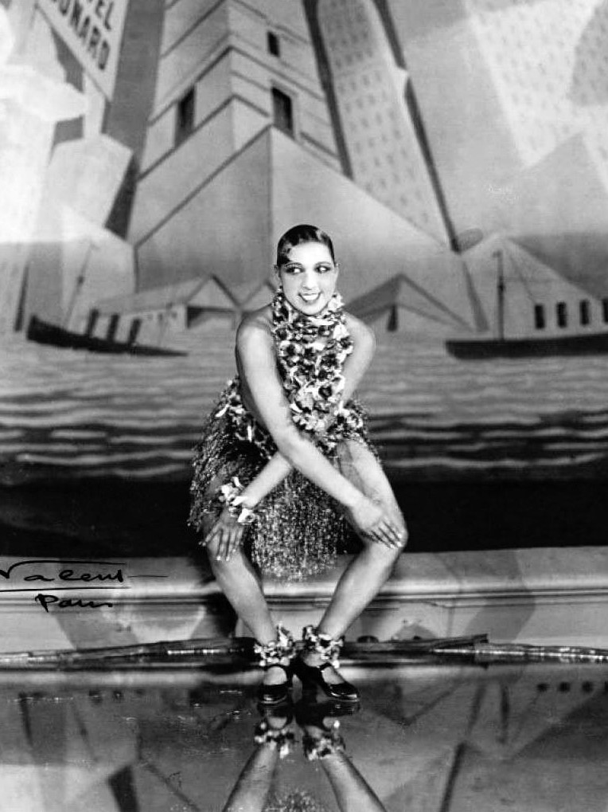

Les Nouveaux Cours Offerts en 2011
D'autres Danses Sociales
 Initiation au Twist, Rock'n'Roll, Charleston, Two Step, Triple Swing, Foxtrot, Quickstep...
Voici quelques définitions:
- Triple swing: Danse dans laquelle il y a des figures acrobatiques et où la posture est détendue et où les mains sont au niveau de la taille.
- Rock'n'Roll: Danse très dynamique avec des passes personnalisées.
- Jive: Version plus modérée et accessible du triple swing, tout de même caractérisée par des rythmes rapides et des jeux de jambes, mais sans les figures acrobatiques. Les pas de base sont alternés et il y a des mouvements prononcés des hanches.
- Foxtrot: Danse où les danseurs sont dans les bras de l'autre et où ils doivent se déplacer sur une grande distance.
- Quickstep: Mélange de Froxtrot, Charleston, Shag, Peabody et de One step. Les pas sont faits en miroir par rapport au partenaire et la position des mains sur le/la partenaire est importante.
- Charleston: Danse avec des battements de bras, des transferts de poids avec les pieds tournés vers l'intérieur et les genoux serrés, légèrement fléchis.